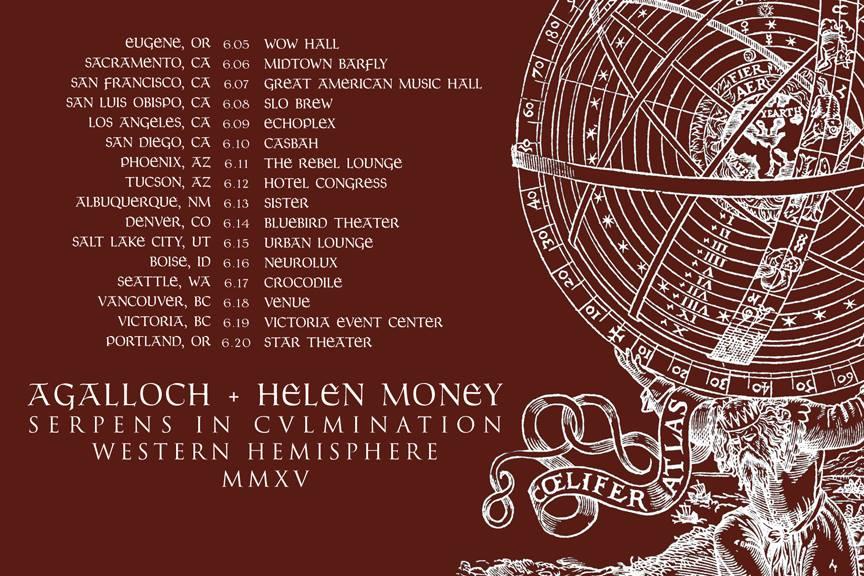
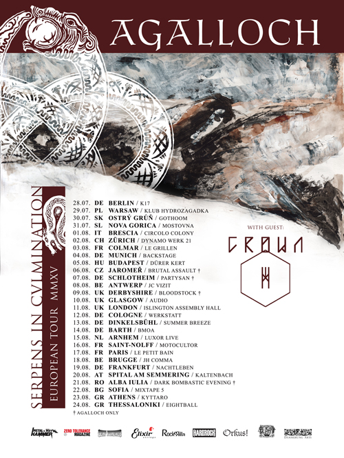

Serpens In Cvlmination West Coast tour
2015-04-18
Serpens In Cvlmination European tour
2015-03-12
New shop
2013-03-12
We have redesigned and linked the Dämmerung Arts shop to this page. It is the official merchandise source for Agalloch.
We have also started carrying select Eisenwald releases and will be adding more titles to our distro list in the coming weeks.